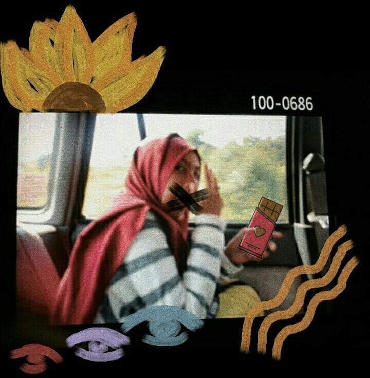

Yey, It's me!
Hi, art lovers!
Aku Annaura Nabilla Masduki, panggil aja Naura. Aku saat ini ada di bangku kuliah semester 3, prodi Teknologi Sains Data Universitas Airlangga. Aku sangat berambisi untukk terus mempelajari segala sesuatu tentang data sains, seperti Python, R, Data Mining, dan juga Machine Learning.
Menjadi seorang mahasiswa teknik tidak menghilangkan hobi yang saya geluti sejak kecil. Saya memiliki ketertarikan dengan seni (terutama lukis) dan fashion. Sejak kecil saya selalu ingin menjadi seorang fashion desainer yang juga mengadakan pameran lukis pribadi. Pada blog ini, saya akan membagikan beberapa karya yang saya buat.
Bak kata pepatah, "Sekali kamu menyakiti seorang seniman, kamu akan abadi dalam karya-karyanya". Saya biasanya melukis sesuatu yang ada di pikiran saya sebagai bentuk meluapkan emosi saya. Melukis bertemakan pemandangan, hal yang saya benci, hal yang membuat saya marah, seseorang yang penting bagi hidup saya, dan apapun lainnya kemudian mengabadikan itu semua di atas kertas dan kanvas.
Saya sangat mengapresiasi jika teman-teman ingin memberi saran, kritik, serta mengajak kolaborasi dalam pembuatan karya-karya berikutnya! Untuk beberapa lukisan, saya juga membuka donasi yang kemudian akan disalurkan bagi orang-orang yang lebih membutuhkan. Teman-teman semua dapat menghubungi saya lewat email mengenai hal-hal tersebut. Love, Naura.
My forever favorites
more
Pertama
more
more
Aku
more